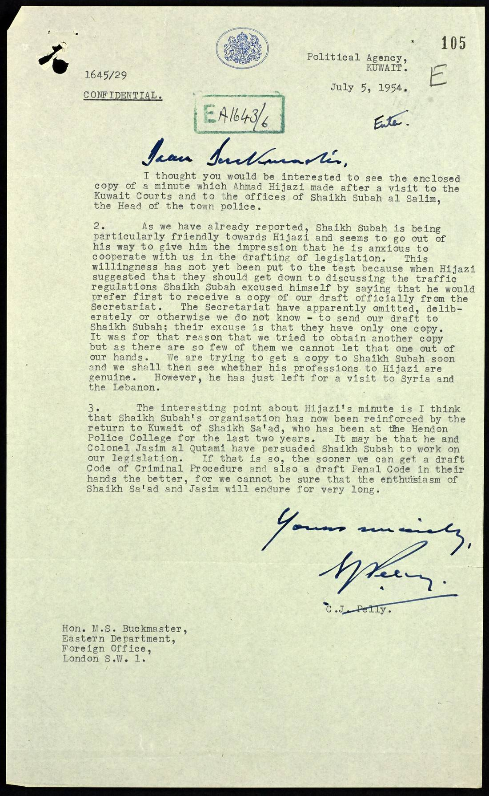

1954 · Letters from the British Political Agency in Kuwait on the drafting of Kuwait's laws
Colonel Jassim Al-Qatami and Kuwait's first criminal laws
What it is
The Agency hopes that Sheikh Saad, just back from Hendon Police College, and Colonel Jasim al-Qatami have persuaded Sheikh Sabah to work on new legislation, and wants draft criminal procedure and penal codes in their hands soon. A British official also meets Sheikh Sabah Al-Salim, Sheikh Saad and Colonel Jasim at Police Headquarters about traffic regulations.
Why it matters
The earliest mention found of Jassim as Colonel, two years before Suez, working on Kuwait's first criminal and traffic laws.
Who is meant
The same Jassim Al-Qatami as the records that give his full name: Director of Police, resigned at Suez, later a nationalist member of the National Assembly.
Page copies


Original text
English translation
Notes
The British spelled the name "al Qutami" in this file.
Others named
Sources
The National Archives, London, digitised by the Arabian Gulf Digital Archive (agda.ae). Images reproduced by permission of The National Archives, London, England.
Archive reference
- FO 371/109924 · Extra-territorial jurisdiction in Kuwait; jurisdiction of HBM's Court for Kuwait in divorce cases involving Moslems
How this text was made: Typed from the archive's own text reading of the scan, corrected against the scan where the reading was garbled. … marks text left out. Arabic translation by Claude; please review.
Open in the interactive site